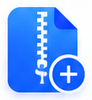
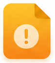
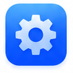
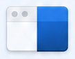
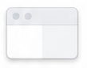
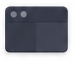
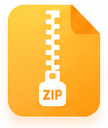
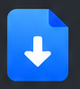

xdzip · 功能状态高保真稿
返回全部高保真稿（含主界面） · 逐项素材对照
8 张图板 · 11 个窗口画面 · 9 类功能状态。点击图片查看原图。生成式视觉审阅稿，交互以规格为准。
对应切图与新增图标
前 24 项为保留背景的原像素切片；后 18 项为透明矢量重建候选。共享素材沿用 v1。

create-archive image-blueimage-amberremove-row
image-blueimage-amberremove-row conflict-documentconflict-pdfconflict-warningprogress-documentprogress-image
conflict-documentconflict-pdfconflict-warningprogress-documentprogress-image
partial-documentpartial-successpartial-skippedpartial-warning
settings-gear
theme-system
theme-light
theme-dark success-largestopping-spinnercancelled-large
success-largestopping-spinnercancelled-large
overwrite-archive existing-archivewindows-document
existing-archivewindows-document
linux-documentlight/archive-addlight/document-downloadlight/document-warninglight/image-filelight/status-warninglight/status-successlight/status-skippedlight/status-stoppedlight/spinnerlight/infolight/removelight/clocklight/theme-systemlight/settings-tilelight/document-conflictlight/image-amberlight/status-partial-successlight/archive-warning